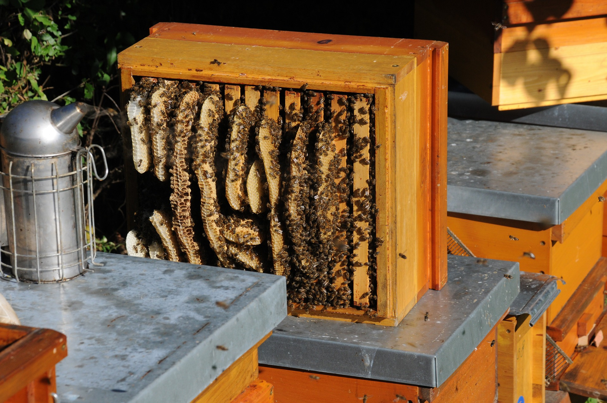

Contrary to popular belief, growing your own food is very simple, if you are given the knowledge to do so. We believe that seasonal fruit and vegetables not only reduce your carbon footprint but taste absolutely amazing. Therefore, we feel everyone should have the ability to grow their own food, especially in today's society.
We will teach you all the skills you need so when you return home, you have all you require to transform your own garden and, life. Not only will you be given hands on expertise/tips when to plant your fruit and vegetables but we will also show you how to turn your produce into tasty dishes for when you harvest the results.
In the coming months, we will be creating a free e-book with all our favourite recipes – all you need to do is sign-up to our newsletter.

Over the last 10 years, the bee population has declined considerably, to the point where some species are now on the endangered list. What with the change in weather, electromagnetic waves/frequencies, pesticides and lack of food, it is becoming increasingly more important we find ways to preserve these magnificent insects, without them, humanity will struggle to survive!
“If all the insects were to disappear from the Earth, within fifty years all life on Earth would end. If all human beings disappeared from the Earth, within fifty years all forms of life would flourish.” Jonas Salk
Our objective is to maintain several bee hives and grow food specifically for the bees, while simultaneously monitoring them throughout the Winter and the onset of Spring. By studying them in their natural habitat and their cycles, we hope to find solutions so others can implement them into their daily lives and help save the bees.
